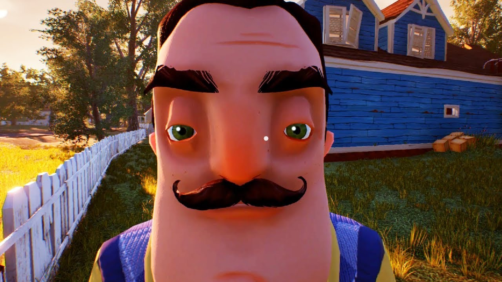
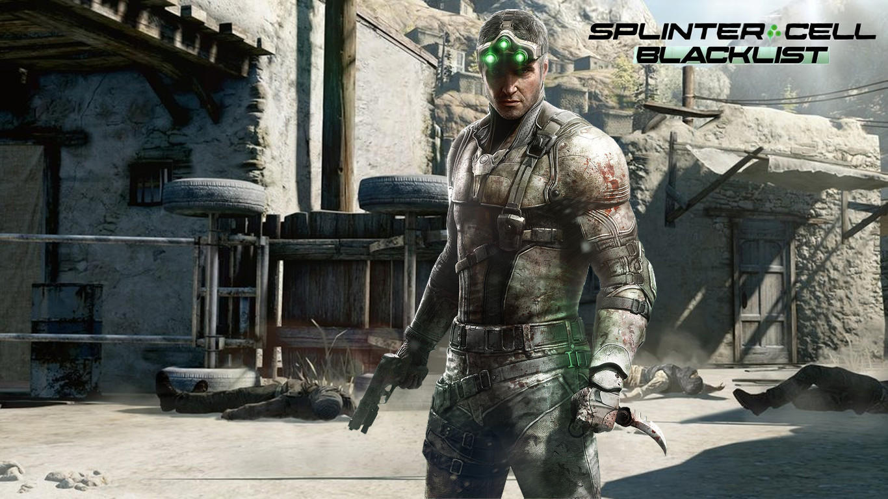
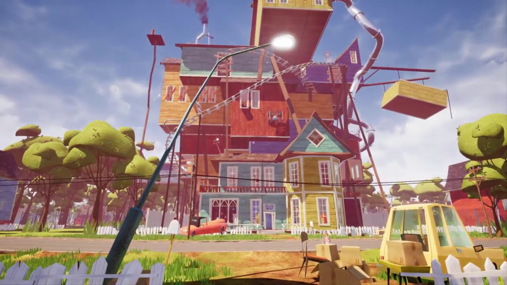
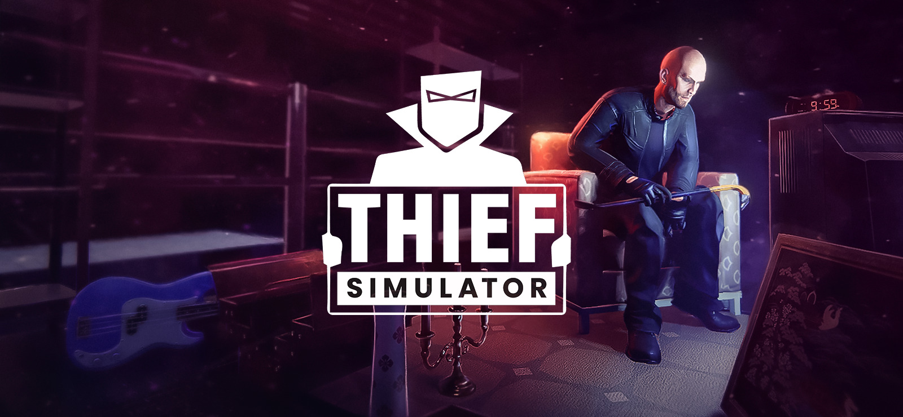

Популярные компьютерные игры
Hello Neighbor alpha 2
Hello Neighbor (Привет, сосед) — мультиплатформенная видеоигра в жанре survival horror, разработанная российской студией Dynamic Pixels и издаваемая компанией tinyBuild. Цель игры состоит в том, чтобы игрок успешно пробрался в подвал дома своего соседа, дабы узнать его тайну и раскрыть все секреты[1]. Искусственный интеллект позволяет соседу выполнять такие действия, как установка ловушек вдоль путей, которые игрок выполнил в предыдущий раз, вставка новых окон взамен разбитым и т. п.[2][3][4]. Игра была выпущена в качестве альфа-сборки на веб-сайте Dynamic Pixels в 2015 году, прежде чем она будет одобрена для продажи чтобы финансировать дальнейшее развитие, после чего студия подписала сделку с tinyBuild, чтобы опубликовать игру[5]. 8 декабря 2017 года игра была выпущена на Microsoft Windows, macOS и Xbox One. Сиквел "Hello Neighbor 2", планируется выпустить в 2021 году.
Читать далее...Splinter Cell:Blacklist
Tom Clancy’s Splinter Cell: Blacklist — мультиплатформенная компьютерная игра в жанре стелс-экшен от третьего лица, шестая часть серии игр «Splinter Cell». «Blacklist» была разработана канадской компанией Ubisoft Toronto при участии Ubisoft Montreal и Ubisoft Shanghai и издана Ubisoft. Впервые игра была анонсирована 4 июня 2012 года на выставке E3 в Лос-Анджелесе. Игра была выпущена для игровых приставок PlayStation 3, XBox 360 и Wii U, а также для персональных компьютеров на базе Microsoft Windows. Действие игры разворачиваются через полгода после окончания событий в Tom Clancy's Splinter Cell: Conviction. Главным героем игры является профессиональный агент Сэм Фишер, который становится во главе секретного подразделения АНБ «Четвёртого Эшелона», чтобы таким образом спасти Соединённые Штаты Америки от нависшей угрозы. Главного героя озвучил Эрик Джонсон, в то время как в русской версии игры его озвучил Валерий Сторожик. На территории России и СНГ игра вышла полностью на русском языке[2]. Игра вышла 20 августа 2013 года в Северной Америке, 23 августа 2013 года в Европе,[3] в России 29 августа[4].
Читать далее...Hello Neighbor Beta 3
Бета-версия 3-это версия, которая вышла всего за пару месяцев до выхода окончательной версии. Он показывает день рождения соседа и почти идентичен Альфа-4. Это десятая и последняя версия игры для раннего доступа.
Читать далее...Theif Simulator
Персонаж игрока выступает в роли приспешника мафии , которого лидер Винни заставляет совершать преступления. В конце оригинальной истории игры Винни пытается убить игрока, но они выживают. В более позднем обновлении игрок отправляется в три отдельные области, чтобы получить достаточно предметов для создания бомбы. Затем они используют бомбу, чтобы взорвать Винни и его особняк. Однако после титров, лом Винни показан закадровым персонажем, подразумевая, что он выжил во взрыве. Симулятор Вора
Читать далее...